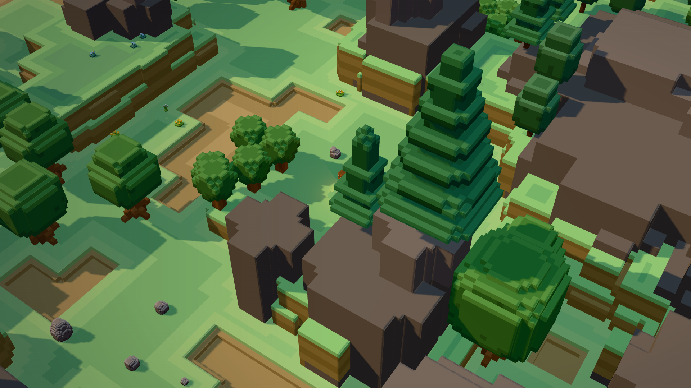

Boas-vindas ao meu pequeno Blog!

Opa! Boas-vindas! Se você entrou aqui é porque deve me conhecer de projetos passados como Minecraft e outros jogos. Atualmente estou trabalhando em um jogo chamado "Hearthmakers", uma experiência de jogo social e sandbox que pretendo lançar futuramente.
Esse blog serve mais como registro pessoal para mim mesmo do que para o público, mas caso queira ler um pouco um velho (de alma) reclamando da vida e seguir meus pensamentos, sinta-se livre!
Esses primeiros posts são mais testes para minhas ferramentas, principalmente esse do blog. Mas vamos lá né! Espero que divirta-se por aqui e qualquer coisa, pode me chamar!